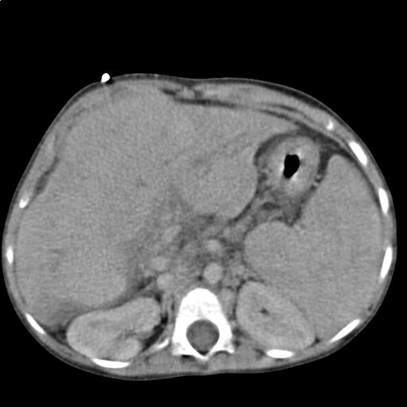

Ficha del catálogo
Cirrosis hepática
- Sistema
- Digestivo
- Modalidad
- TC
- Región
- Hígado y sistema portal
- Dificultad
- Intermedio
Es el estadio final de la enfermedad hepática crónica, caracterizado por fibrosis difusa y formación de nódulos de regeneración que distorsionan la arquitectura del órgano. Las causas más frecuentes son la enfermedad hepática por alcohol, la enfermedad por hígado graso metabólico y las hepatitis virales crónicas. Su relevancia radica en la hipertensión portal y en el riesgo elevado de hepatocarcinoma, que obliga al tamizaje periódico.
Técnica
El ultrasonido es el método de tamizaje y seguimiento, complementado con elastografía cuando está disponible. La tomografía y la resonancia con contraste dinámico se emplean para caracterizar nódulos y valorar la circulación colateral. En resonancia se prefiere el uso de contraste hepatoespecífico en centros con experiencia para diferenciar nódulos regenerativos de lesiones malignas.
Qué observar
- Contorno hepático nodular u ondulado, mejor apreciado en la superficie anterior con transductor lineal
- Redistribución volumétrica con atrofia del lóbulo derecho y del segmento IV, e hipertrofia del lóbulo caudado y del segmento lateral izquierdo
- Ensanchamiento de las fisuras y de los espacios periportales
- Signos de hipertensión portal: Esplenomegalia, colaterales, recanalización de la vena umbilical y ascitis
- Nódulos hepáticos, con especial atención a los que muestran comportamiento vascular sospechoso
- Permeabilidad de la vena porta y presencia de trombo, distinguiendo el bland del tumoral
Hallazgos
El hígado muestra superficie nodular, textura heterogénea y bordes redondeados, con hipertrofia del caudado y atrofia del segmento posterior derecho. Se acompaña de esplenomegalia, várices esofágicas y gástricas, colaterales esplenorrenales, engrosamiento del epiplón y ascitis. En resonancia la fibrosis puede verse como bandas reticulares con realce tardío y los nódulos sideróticos aparecen hipointensos en secuencias sensibles al hierro. El índice caudado sobre lóbulo derecho aumentado es un signo morfológico clásico de apoyo.
Perlas
En un hígado cirrótico, cualquier nódulo mayor de 1 cm con realce arterial intenso seguido de lavado en fase portal o tardía debe considerarse hepatocarcinoma hasta demostrar lo contrario, sin necesidad de biopsia. Este comportamiento vascular es tan característico en el contexto de cirrosis que constituye el fundamento de los criterios diagnósticos por imagen.
Diagnóstico diferencial
- Esteatosis hepática difusa
- Hígado hiperecogénico pero de contorno liso, sin signos de hipertensión portal ni redistribución volumétrica.
- Fibrosis hepática congénita
- Hipertensión portal con función hepática conservada y frecuente asociación a enfermedad renal quística.
- Síndrome de Budd-Chiari
- Ausencia de flujo en las venas suprahepáticas con hipertrofia marcada del caudado y realce parcheado en mosaico.
- Pseudocirrosis por metástasis tratadas
- Retracción capsular y contorno nodular en paciente oncológico, con antecedente de tumor mamario o de otro primario.
- Hepatitis aguda grave
- Hepatomegalia con pared vesicular engrosada y edema periportal, de curso agudo y contorno liso.
Simuladores
- Hígado lobulado por variantes anatómicas o por surcos diafragmáticos profundos
- Esteatosis heterogénea que simula textura nodular
- Congestión hepática crónica de origen cardiaco, que da heterogeneidad y ascitis
Por modalidad
- US
- Herramienta de tamizaje semestral de hepatocarcinoma y de valoración del flujo portal con Doppler; la elastografía cuantifica la rigidez hepática
- TC
- Muestra el mapa completo de colaterales portosistémicas, la ascitis y sirve para planear procedimientos como una derivación portosistémica
- RM
- Mejor caracterización de nódulos y de la fibrosis; el contraste hepatoespecífico ayuda a diferenciar nódulos regenerativos de lesiones malignas
Protocolo
Tomografía o resonancia trifásica con fase arterial tardía a los 30 a 40 segundos, fase portal a los 70 segundos y fase tardía a los 3 minutos, con cortes finos y reconstrucciones multiplanares. En resonancia se añaden T1 en fase y fuera de fase, T2 con supresión grasa y difusión. Con contraste hepatoespecífico se incorpora la fase hepatobiliar a los 20 minutos.
Clasificación
El sistema LI-RADS estandariza el informe de lesiones hepáticas en pacientes con riesgo de hepatocarcinoma. Las categorías van de LR-1, definitivamente benigna, a LR-5, definitivamente hepatocarcinoma, con LR-M para lesiones malignas de probable origen distinto y LR-TIV para tumor en vena. Los criterios mayores incluyen el tamaño, el hiperrealce arterial no periférico, el lavado no periférico, la cápsula de realce y el crecimiento umbral. En el terreno clínico, la clasificación de Child-Pugh y el índice MELD estratifican la función hepática y la prioridad de trasplante.
Errores frecuentes
- Diagnosticar cirrosis solo por hiperecogenicidad, que corresponde a esteatosis y no a fibrosis
- No distinguir el trombo portal tumoral, que capta contraste en fase arterial y expande la vena, del trombo blando
- Omitir la búsqueda dirigida de nódulos en el hígado heterogéneo, donde el hepatocarcinoma pequeño pasa fácilmente inadvertido

cirrosis hipertension portal LI-RADS lobulo caudado varices ascitis higado